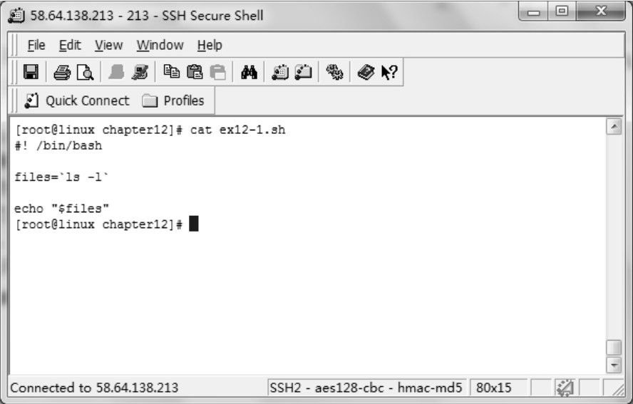
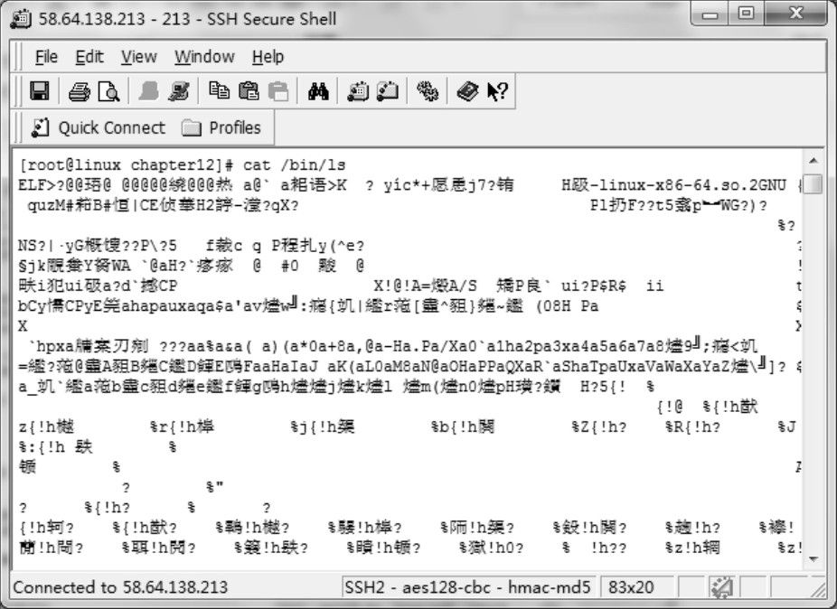
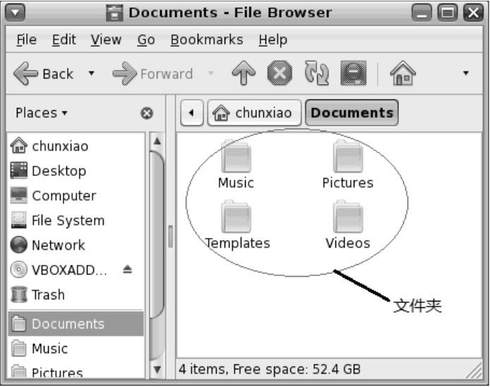
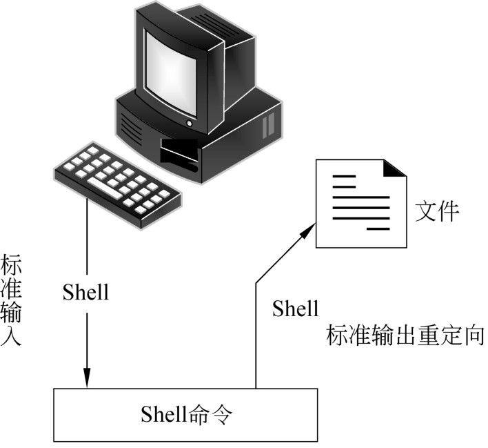
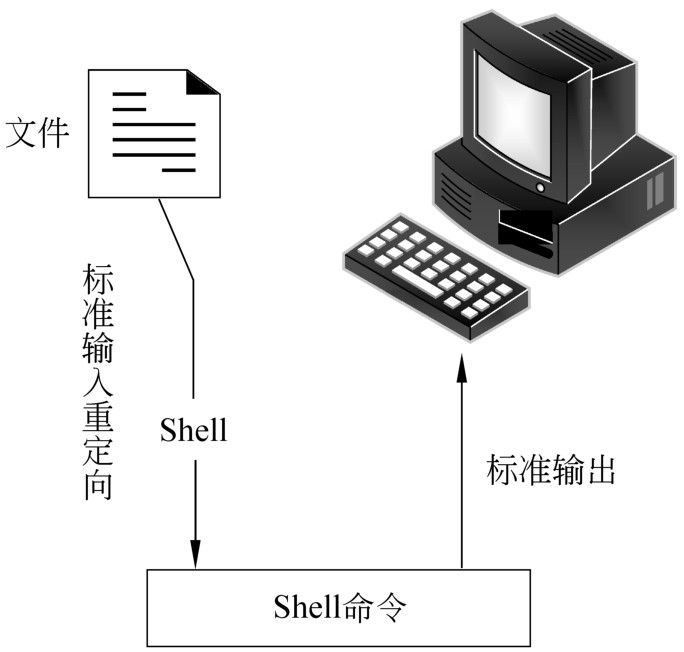

第12章
文件的操作
Linux及UNIX始终秉持“一切即文件”的理念。因此，在Shell编程的过程中，文件的操作是一种非常频繁的事情。本章将对Shell程序设计中的与文件操作相关的知识进行介绍。
本章主要涉及的知识点如下所述。
- 文件：主要介绍文件的基础知识，包括列出文件、文件类型，以及文件权限。
- 查找文件：主要介绍使用find命令来查找文件，包括find命令及语法、路径、测试、使用!运算符对测试求反、处理文件权限错误信息，以及find命令的相关操作等。
- 比较文件：主要介绍使用comm及diff等命令来比较文件。
- 文件描述符：主要介绍什么是文件描述符、标准输入、标准输出，以及标准错误。
- 重定向：主要介绍输入重定向，以及输出重定向及其使用方法。
12.1 文件
对于大多数的Linux及UNIX系统管理员来说，他们每天面对的都是各种类型的文件，包括系统配置的更改、软件的安装及调试。因此，了解Linux中的文件的基础知识非常重要。本节将介绍文件的类型以及文件的权限等。
12.1.1 列出文件
相对于Windows等操作系统，Linux的系统管理员最常使用的不是图形界面，而是字符界面。因此，所有的操作都依赖Linux的命令来完成。一般情况下，当进入某个目录之后，用户总是需要查看当前目录中的文件的列表，以确定需要操作的文件是否存在。
Linux提供了ls命令来列出某个目录的内容，其基本语法如下：
在上面的语法中，option表示ls命令的选项。file参数表示文件名。
最简单的ls命令是不带任何选项和参数的形式，如下：
当单独使用ls时，该命令会列出当前目录中的文件的名称。这些文件名会以多列形式显示。尽管在某些情况下，用户获取到文件名就可以判断文件是否存在，但是，在绝大部分情况下，使用不带任何选项和参数的ls命令提供的信息非常少。因为在Linux中，除了文件名之外，文本还拥有许多其他的属性，例如文件的大小、文件的所有者，以及文件创建日期等。
用户可以使用ls命令的-l选项来显示更为详细的信息，如下：
在上面的输出结果中，第1列为文件的文件类型和访问权限，其中，第1个字符为文件的类型，如果为常规文件，则使用一个连字符-表示。关于其他的文件类型的表示方法，将在下一小节中介绍。后面的9个字符为文件的访问权限，分为3组，每3个字符为一组，分别表示文件所有者、同组用户，以及其他组用户对于该文件的访问权限。在每一组权限中，使用3个字符r、w和x分别表示读、写和执行的权限。如果当前用户没有该权限，则使用连字符-表示。
第2列为文件的硬链接数，在上面的例子中，所有的文件都只有1个硬链接，即文件本身。第3列为文件的所有者，在上面的例子中，文件的所有者为root。第4列为所有者的主用户组，第5列为文件的大小，第6列为文件的最后访问时间，第7列为文件名。
如果没有指定路径，则ls命令会列出当前的工作目录的内容。用户可以在ls命令的后面加上具体的路径，以显示指定路径的内容。例如下面的命令列出/etc目录中的文件：
在Linux或者UNIX中，隐藏文件的文件名以圆点.开头，在默认情况下，ls命令并不列出隐藏文件。如果想要列出所有的文件，包括隐藏文件，可以使用-a选项。例如，下面的命令将用户root的主目录中的所有的文件列出来：
在上面的执行结果中，第1行的文件名为一个圆点，表示当前的目录。第2行的文件名为两个圆点，表示当前目录的父目录。在所有的目录中，都包含.和..这两个特殊的目录。第3行开始都是以圆点开头的普通的隐藏文件。
 注意：关于ls命令的其他选项，读者可以参考Shell手册。
注意：关于ls命令的其他选项，读者可以参考Shell手册。
12.1.2 文件类型
具体地讲，UNIX的文件类型非常多。但是这些类型大致可以分为3类，分别为普通文件、目录和伪文件。在伪文件中，有3种类型最常见，分别为特殊文件、命名管道，以及proc文件。下面分别对这些文件类型进行介绍。
1．普通文件
普通文件，又称为常规文件或者一般文件，是与人直接打交道最多的文件类型。普通文件包含数据，通常位于某种类型的存储设备上面，例如硬盘、U盘、CD或者DVD等。当我们使用Microsoft Word编辑.doc文件时，Word程序本身以及所编辑的.doc文件都是普通文件。
普通文件可以分为文本文件和二进制文件这两种类型。文本文件包含的数据由可显示字符，例如字母、数字、标点符号、空格及制表符等组成。一个文本文件由许多行组成，每个行的结尾都有一个表示换行的符号，称为换行符（LF）。当我们编辑文本文件时，按回车键后，就在光标所在的位置插入了一个换行符。
文本文件通常用来存储文本数据，例如纯文本、Shell脚本程序、源代码、配置文件，以及HTML文档等。总地来说，只要是我们能够读懂和理解的文件，一般都是文本文件。如图12-1所示，显示了使用cat命令输出一个Shell程序的代码。

图12-1 使用cat命令显示文本文件内容
二进制文件既包含可显示字符，也包括不可显示字符，也就是说二进制文件包含了全部的256个ASCII字符。这种类型的文件只有在执行或者由其他的应用程序解释时才有意义。对于绝大部分人来说，这种文件不可直接阅读和理解。常见的二进制文件包括可执行文件、图像文件、数据库文件、视频文件、音频文件、Office文档等。在UNIX系统中，最常用的ls命令就是一个二进制文件，它通常位于/usr/bin目录中。如果用户使用cat命令来查看二进制文件的内容，则会出现许多不可读的乱码，如图12-2所示。
在ls-l命令中，普通文件的第1列的第1个字符为连字符-，如下：

图12-2 查看二进制文件时的乱码
2．目录
在UNIX及Linux系统中，目录也是一种文件。和普通的文件类似，目录也存储在某些存储设备上面，但是目录本身不存储具体的用户数据。目录的作用是组织和访问其他文件。从这一点上讲，目录与我们现实生活中的文件夹的作用相同，在现实生活中，我们可以通过文件夹快速地找到所需要的文件，而在计算机中，我们通过目录也可以快速地找到所需要的文件。
目录中包含各种各样的文件，当然也包括目录。当一个目录中包含目录时，这个目录就被称为父目录，被包含的目录就被称为子目录。通常情况下，某些功能相同或者相关的文件会被放在同一个目录中，例如，UNIX或者Linux系统中的常规命令通常放在/usr/bin目录中，而与系统有关的命令通常放在/usr/sbin目录中。
由于目录可以嵌套，因此就可以按照层次来组织文件。在后面的内容中，我们可以看到，整个UNIX或者Linux文件系统就是一个大的树型的层次结构体。位于最上面的是根目录，根目录中包含文件以及子目录，子目录中又包含其他的子目录。用户可以将自己的文件放在这个树型结构的某个子树中，并可以创建或者删除自己的目录和文件。
在实践的过程中，一定要注意文件和目录的关系。文件本身不包含文件名、文件的大小，以及文件的存储权限等属性，它只存储文件的内容。文件名只有在目录文件中才能找到。每个子目录和文件都在其父目录中拥有一条记录，该记录包含以下两部分：
- 文件名。
- 文件或者目录的唯一标识符（即inode节点）。
用户不能直接读写目录文件本身的内容，但是在执行某些操作时，会通过内核间接地操作目录文件。例如，当我们删除一个文件时，该文件的父目录中就会删除该文件对应的记录；当我们创建一个文件时，会在该文件的父目录文件中增加一条关于该文件的记录。
有的时候，用户可能会听到另外一个名词，叫做“文件夹”。特别是在桌面环境中，文件管理器中的目录的表现形式就是一个个文件夹图标，如图12-3所示。实际上这个名词来自于Apple Macintosh和Microsoft Windows。Windows操作系统使用文件夹来组织文件，其功能与UNIX系统的目录基本相同，但是其功能却没有那么强大；Macintosh的文件夹实际上就是目录，只是在文件管理器中以文件夹的形式表现出来。
3．伪文件
与普通文件和目录不同，伪文件不是用来存储数据的。正因为如此，这些文件并不占用磁盘空间，尽管这些文件确实存在于目录树中，是目录树的一部分，并且也是按照目录的方式来组织。伪文件的目的是提供一种服务，通过这种服务，系统可以像操作普通文件一样来访问这些伪文件所代表的对象。

图12-3 文件夹
最重要的伪文件是设备文件。设备文件是物理设备在系统中的内部表示，例如键盘、鼠标、显示器、打印机、硬盘等。对于这些设备，都有对应的伪文件来表示它们。除了设备文件之外，还有命名管道，通过命名管道，用户可以将一个命令的输出连接到另外一个命令的输入上面。最后一种伪文件是proc文件，它允许访问内核中的信息。
注意：除了上面介绍的3种文件之外，还有其他文件类型，例如链接等。
12.1.3 文件的权限
UNIX使用一套简单有效的方式来为文件设置权限。我们再次浏览一下上面的ls -l命令的输出结果，该结果一共有7列，其中第1列就是文件的权限，如下：
第1个字符是“-”，这个字符表示当前的文件是一个普通文件，不属于权限的范围。从第2个字符开始一直到结尾的9个字符代表了当前文件的存取权限。为了更加清楚地分析这个文件的权限，可以将这9个字符分成3组，如下：
上面的3组分别代表不同类别的权限，每一类权限都用3位来表示，依次表示文件的读取权限、写入权限和执行权限。r表示读取（read）权限，拥有该权限的用户将可以使用cat及more等命令查看文件内容。w表示写入（write）权限，拥有该权限的用户将可以对该文件进行编辑修改。x表示执行（execute）权限，拥有该权限的用户将可以执行该文件，当然，前提是该文件是可执行文件。如果某个权限位是“-”符号，则表示不拥有该权限。
注意：对于非可执行文件来说，执行权限没有意义。
在上面的例子中，第1组权限是rwx，它表示该文件的所有者拥有该文件的读、写和执行这3个权限。那么如何判断哪个用户是该文件的所有者呢，在上面ls-l命令的输出结果中第3列就是文件的所有者，在本例中，db.dat文件的所有者是root用户。当root用户登录进系统之后，便拥有了对于该文件的3种权限。
第2组是权限是r-x，它表示该文件的组所有者对该文件拥有读和执行的权限，由于第2个权限位是“-”符号，因此，组所有者没有写入该文件的权限。ls -l命令的第4列显示的就是当前文件的用户组。在上面的例子中，db.dat文件的用户组是root。在当前系统中，属于root用户组的所有用户都拥有对于db.dat文件的读取和执行权限。
第3组权限是r-x，它表示当前系统的其他用户对该文件拥有读取的权限，由于第2个和第3个权限位都是“-”符号，因此其他用户对db.dat文件不拥有写入和执行的权限。所谓其他用户，是指当前系统中除文件所有者和文件的用户组成员之外的其他所有用户。在上面的例子中，是指除root用户和root组成员之外的其他的用户。
从上面的分析中，可以得知，在UNIX系统中，我们可以分别给所有者、组成员，以及其他用户赋予不同的权限。作为初学者，必须弄清楚这3类权限的设置方法，如果权限设置不当，会导致灾难性的后果。
注意：在上面的例子中尽管root用户也属于root用户组的成员，但是文件的用户组权限并不适用于所有者。文件的所有者有单独的权限设置。如果root用户放弃了对于db.dat文件的所有权，那么root用户将拥有对于db.dat文件的组权限。
12.2 查找文件
文件的搜索是UNIX及Linux中经常用到的操作。在Shell程序设计的时候，也经常用到文件搜索。Linux提供了几个关于文件搜索的命令，例如locate、whereis以及find等。其中，find命令的功能最为强大，所以本节详细介绍find命令在Shell程序中的使用方法。
12.2.1 find命令以及语法
find命令是UNIX系统中最古老、最复杂的程序之一。find命令的功能非常强大，可以根据不同的标准搜索任何文件，并且可以在任何位置搜索。另外，当find搜索完成之后，可以以多种不同的方式来处理搜索结果。因此，find命令是进行文件搜索的最常用的工具。
严格来说，find命令的语法非常复杂。实际上find命令的完整语法已经超出本书所讨论的范围，所以下面将逐步介绍最常用的功能。
简单地讲，find命令的基本思想就是搜索一个或者多个目录树，根据用户指定的测试条件，查找符合特定标准的文件。当查找完成之后，find命令将对查找到的文件执行指定的操作。这些操作可以非常简单，例如仅仅将文件名打印出来；也可以非常复杂，例如删除文件、显示文件的详细信息或者将搜索结果传递给另外一个命令。
在使用find命令的，用户通常需要提供3种信息，分别为要搜索的路径、测试条件以及操作。find命令的基本语法如下：
其中，path参数表示要搜索的路径，用户可以同时指定多个路径，路径之间用空格隔开。test参数表示测试条件，同样，用户也可以同时指定多个测试条件，它们之间用空格隔开。action参数则表示对于搜索结果要执行的操作，如果有多个操作，则这些操作之间用空格隔开。
find命令的工作流程如下：
（1）搜索所有用户指定的路径，包括所有的子目录。
（2）对于遇到的每个文件，检查是否符合用户指定的条件。在该步骤中，所有符合条件的文件形成一个列表。
（3）对于结果列表中的每个文件，执行用户指定的操作。
例如，下面是一个简单的find命令：
在上面的命令中，路径为根目录/，表示在当前系统的所有的目录及其子目录中进行搜索。测试条件为-name ls，表示搜索文件名为ls的文件。操作为-print，表示将搜索到的文件名打印出来。
12.2.2 find命令：路径
find命令的路径参数表示在何处搜索指定的文件。通常情况下，路径都是一个目录名。用户可以使用相对路径、绝对路径，以及简写形式来指定路径。例如，下面的命令中都是一些合法的路径：
在上面的命令中，第1个命令表示搜索/usr/ bin目录及其子目录。第2个命令表示搜索根目录及其子目录，实际上是搜索整个文件系统。第3个命令是搜索当前的目录，第4个命令是搜索root用户的主目录。
注意：在上面的命令中，并没有指定测试条件和操作，表示将所有的的文件打印出来。
【例12-1】通过find命令在当前的目录中搜索扩展名为.sh的文件，代码如下：
在上面的代码中，第5行的find命令的路径参数为.，表示当前目录。测试条件为-name"*.sh"，表示搜索扩展名为.sh的文件。操作参数被省略，表示将搜索结果输出到标准输出设备。
该程序的执行结果如下：
如果用户想要在多个路径下面查找，则可以将这些路径全部列出来，中间用空格隔开，如下面的例子所示。
【例12-2】演示通过find命令同时搜索多个路径的方法，代码如下：
该程序的执行结果如下：
从上面的执行结果可以得知，指定的httpd.conf文件位于/etc/httpd/conf目录下面。
12.2.3 find命令：测试
find命令的测试条件用来对搜索结果进行筛选。只有符合指定条件的文件才会出现在最终的搜索结果中。前面已经讲过，当用户省略测试条件时，则表示指定目录中的所有的文件都将出现在搜索结果中。如表12-1所示，列出了find命令中常用的测试条件。
表12-1 常用的find命令测试条件
| 条件 | 说 明 |
| -name pattern | 表示包含指定匹配模式的文件名 |
| -iname pattern | 表示包含指定匹配模式的文件名，该条件不区分字母大小写 |
| -type | 指定文件类型，可以取f和d这两个值，分别表示普通文件和目录 |
| -perm mode | 匹配其权限被设置为指定mode的文件 |
| -user userid | 匹配其所有者为指定用户ID的文件 |
| -group groupid | 匹配其所有者的主组为指定组ID的文件 |
| -size size | 匹配其大小为size的文件 |
| -empty | 匹配空文件 |
| -amin [-+]n | 文件最后一次访问时间，其中-n表示访问时间为距今n分钟以内，+n表示访问时间距今n分钟以前，n表示恰好为n分钟 |
| -atime [-+]n | 文件的最后一次访问时间，其中-n表示访问时间为n天以内，+n表示访问时间为n天以前，n表示最后一次访问时间恰好为n天 |
| -cmin [-+]n | 文件最后一次状态改变的时间，其中-n表示访问时间为距今n分钟以内，+n表示访问时间距今n分钟以前，n表示恰好为n分钟 |
| -ctime [-+]n | 文件的最后一次状态改变的时间，其中-n表示访问时间为n天以内，+n表示访问时间为n天以前，n表示最后一次访问时间恰好为n天 |
| -mmin [-+]n | 文件内容最后一次被修改的时间，其中-n表示访问时间为距今n分钟以内，+n表示访问时间距今n分钟以前，n表示恰好为n分钟 |
| -mtime [-+]n | 文件内容最后一次被修改的时间，其中-n表示访问时间为n天以内，+n表示访问时间为n天以前，n表示最后一次访问时间恰好为n天 |
表12-1列出的测试条件可以分为3组，分别为文件名、文件的特征，以及文件的访问或者修改时间。其中，-name和-iname是从文件名进行测试；-type、-perm、-user、-group、-size及-empty是从文件的特征方面进行测试；-amin、-atime、-cmin、-ctime、-mmin及-mtime等是从文件的最后访问时间及修改时间方面进行测试。
在find命令的测试条件中，最常用的是-name和-type，下面将分别进行介绍。
【例12-3】分别统计/etc目录中全部的文件数量及子目录数量，代码如下：
在上面的代码中，第5行的find命令中使用-type f指定文件类型为普通文件，然后将搜索结果通过管道传递给wc命令。第7行的find命令使用-type d选项指定文件类型为目录，同样将搜索结果传递给wc命令。
该程序的执行结果如下：
注意：在-type选项中，除了f表示普通文件，d表示目录之外，还有c表示字符设备， b表示块设备，p表示管道，以及l表示链接等。
如果想通过文件名搜索文件，可以使用-name和-iname这两个选项，这两个选项的区别在于前者区分字母大小写，而后者则不区分大小写。
【例12-4】演示通过文件名来搜索文件的方法，代码如下：
在上面的代码中，第5行的find命令中使用-name选项指定要搜索的文件名为httpd.conf，第8行将搜索到的文件的前5行输出到屏幕。
该程序的执行结果如下：
通常情况下，-name选项会精确匹配要搜索的文件名，在【例12-4】中，类似httpd.conf.bak等的文件名不会出现在搜索结果中。为了能够使搜索结果更加完整，用户可以使用通配符?、*或者[]。其中?表示匹配任意一个单个字符，*表示匹配0或者多个任意字符，[]表示匹配其中的任意一个字符。在使用通配符的时候，注意要使用引号将其引用起来，这样的话可以避免在传递给find命令之前Shell解释这些通配符，从而导致搜索出现错误。
【例12-5】本例对【例12-4】进行修改，在-name选项中使用了通配符*，代码如下：
在上面的代码中，第5行的-name "httpd.conf*"表示匹配以字符串httpd.conf开头的文件名，后面可以跟随任意多个字符。
该程序的执行结果如下：
从上面的执行结果可以得知，使用通配符之后，程序输出了3个文件的内容，其文件名分别为httpd.conf、httpd.conf.bak，以及httpd.conf.bak.20120320。
方括号[]也是一种非常有用的通配符，用户可以将一系列的字符放在方括号中，find命令会匹配方括号中的任意一个字符，例如：
上面第1条命令表示搜索文件名为aa、ab，以及ac的文件；第2条命令表示搜索文件名为data1、data2、data3、dataa、datab，以及datac的文件。如果方括号中是一段连续的字母或者数字，则可以使用连字符-来简化书写方法。例如上面的两条命令与下面的两条命令等价：
【例12-6】演示方括号通配符的使用方法，代码如下：
在上面的代码中，第5行的find命令的测试条件为-name"rc[1-9].d"，表示搜索文件名以rc开头，然后跟随1～9中的任意一个数字，然后以.d结尾的文件。
该程序的执行结果如下：
注意：尽管在使用通配符的时候不使用引号不一定总是出现错误，但是使用单引号或者双引号将通配符引用起来是一个非常好的习惯。可以有效地避免在传递给find命令之前，Shell解释并应用其中的通配符。
在find命令中，用户可以同时使用多种测试条件，例如：
表示搜索类型为普通文件，名称为ls的文件。
对于表12-1中列出的其他测试条件，用户可以自己去练习使用，此处不再举例说明。
12.2.4 find命令：使用!运算符对测试求反
find命令提供了一个感叹号运算符!，用来对测试条件求反。!符号可以加在任何测试条件的前面，表示其后测试的相反条件。在使用!运算符的时候，一定要注意语法问题，即必须在!符号的左右各留一个空格，这样find命令才会正确解释!运算符。另外，为了避免Shell解释!符号，用户需要使用单引号或者反斜线将其引用起来。
例如，下面的命令搜索/data1/wwwroot目录中，除jpg文件之外的普通文件：
在上面的命令中，-type f表示搜索普通文件，\!-name"*.jpg"表示不匹配以.jpg为扩展名的文件。
如果使用单引号，则上面的命令可以书写为：
12.2.5 find命令：处理文件权限错误信息
find命令可以在任意指定的位置中搜索指定的文件。但是，Linux系统的权限非常严格。如果当前用户对于指定的目录没有访问权限，则find命令会给出一些错误信息，如下：
在上面的命令中，首先使用su命令从root用户切换到另外一个普通用户chunxiao，然后执行find命令。在find命令执行的过程中，给出一系列Permission denied的错误消息，这意味着当前用户对于当前目录没有访问权限。尽管在命令行中执行find命令的时候，这些错误消息并不会引起什么问题。但是，如果在Shell程序中执行find命令，出现这些错误消息，则会导致意想不到的结果。因此，在Shell程序中，用户应该尽量避免这类错误消息的出现。
实际上，find命令的错误消息是写入到标准错误的，通常情况下是输出到屏幕上。因此，用户可以通过标准错误重定向到/dev/null来达到将错误消息直接丢弃的目的。其中/dev/null是一个空设备，任何写入到该设备的数据都将被直接丢弃。
在下面的命令中，使用重定向将错误消息丢弃：
在上面的命令中，2是一个文件描述符，表示标准错误，大于号>表示输出重定向。关于文件描述符和重定向，将在本章的后面几节中详细介绍。从上面的执行结果可以得知， find命令的错误消息已经不再出现。
12.2.6 find命令：动作
find命令最为强大的功能在于不仅仅可以根据复杂的条件来搜索文件，而且还可以非常方便地对搜索结果进行处理。前面已经讲过find命令的语法中的第3部分的action参数就是find命令对于搜索结果的动作。如表12-2所示，列出了find命令中常用的动作。
表12-2 find命令中常用的动作
| 动作 | 说 明 |
| 默认动作，将搜索结果写入到标准输出 | |
| -fprint file | 与-print相同，但是将搜索结果写入到文件file |
| -ls | 以详细格式（长格式）显示搜索结果 |
| -fls file | 同-ls，但是将搜索结果写入到文件file |
| -delete | 将搜索到的文件删除 |
| -exec command {} \; | 查找并执行命令，{}表示搜索到的文件名 |
| -ok command {} \; | 查找并执行命令，但是需要用户确认 |
在find命令的动作中，-print和-fprint的作用都是输出完整的文件名，但是前者是写入标准输出，后者是写入用户指定的文件。-ls和-fls的作用都是以长格式列出搜索结果，前者是写入标准输出，后者写入用户指定的文件。-delete动作的作用是将搜索到的文件直接删除。用户在使用-delete的时候一定要非常谨慎，因为该动作不给出任何确认提示。
-exec使find命令对搜索结果中的文件执行指定的Shell命令，相应的Shell命令的语法为：
其中command表示Shell命令，大括号{}表示搜索结果中的文件名，最后的分号表示命令的结束。注意，最后的分号需要反斜线来转义，不能单独使用分号。另外，分号和前面的大括号之间有一个空格。
-ok和-exec的作用相同，只不过以一种更为安全的方式来执行该参数所给出的Shell命令，在执行每一个命令之前，都会给出提示，让用户来确定是否执行。
大多数情况下，用户需要搜索某些文件，然后将其删除，这是作为系统管理员最常用的命令之一。
【例12-7】演示使用find命令搜索并删除文件的方法，代码如下：
在上面的代码中，第5行是find命令，其搜索路径为./tmp，即当前目录中的tmp子目录。测试条件为-name"*.php"，使用通配符*来表示所有扩展名为.php的文件。动作为-exec rm-f{}\;，其中的Shell命令为rm-f，即将指定的文件强制删除，不给出任何提示。后面的{}作为rm命令的参数，表示文件名，即find命令搜索出来的文件。命令的最后以\;符号结束。
第8行使用系统变量$?来获取find命令的退出状态，如果等于0，则表示执行成功，因此输出成功提示；否则，给出错误提示。
该程序的执行结果如下：
注意：在使用-exec和-ok时，一定要注意语法。另外，-exec在执行Shell命令的时候不会给出任何提示，因此，在使用时一定要慎重。
12.3 比较文件
通常情况下，Linux中的数据都是以文本文件的形式存储的，并且每一行为一条记录。因此，在Shell程序中处理数据的话，经常会遇到将多个数据文件中的数据进行对比分析的情况。本节将介绍Linux中最常用的两个比较文件的命令comm和diff。
12.3.1 使用comm比较文件
comm命令的作用是逐行比较两个有序的文件，其语法如下：
其中，option表示comm命令的有关选项，比较常用的选项如下所列。
- -1：不显示第1个文件中独有的文本行。
- -2：不显示第2个文件中独有的文本行。
- -3：不显示两个文件中共同的文本行。
- --check-order：检查参与比较的两个文件是否已经排序。
- --nocheck-order：不检查参与比较的两个文件是否已经排序。
file1和file2分别表示参与比较的两个文件。
默认情况下，comm命令会输出3列，分别为第1个文件独有的文本行、第2个文件独有的文本行，以及两个文件公共的文本行。用户可以使用-1、-2以及-3选项分别隐藏这3个列。
在学习comm命令之前，用户需要准备两个文本文件，其名称分别为students.txt和students1.txt，其内容分别如下：
从上面的输出信息可以得知，students.txt和students1.txt存储的是一些学生的姓名。用户可以在本书所配光盘中的chapter12目录中找到这两个文件。这两个文件都是已经按照字母顺序排好的，因此，可以直接使用comm命令来比较其内容的差异。
作为初学者，应该首先了解一下直接使用comm命令对比这两个文件的结果，代码如下：
从上面的输出结果可以得知，comm命令会将比较结果分为3列输出，这3列之间用制表符隔开。另外，即使在输出结果中，每一行都是一条记录。
【例12-8】通过comm命令对students.txt和students1.txt这两个文件的内容进行对比，并给出对比结果，代码如下：
在上面的代码中，第5行找出只在students.txt文件出现的学生姓名，第11行找出只在students1.txt文件中出现的学生姓名，第17行找出同时在students.txt和students1.txt出现的学生姓名。
该程序的执行结果如下：
有了上面的输出结果之后，用户可以进一步对各项数据进行统计，如下面的例子所示。
【例12-9】通过comm命令结合管道和wc命令对3类学生数据分别进行统计，代码如下：
在上面的代码中，第5、10和15行分别统计出只在students.txt、students1.txt，以及同时在两个文件中出现的学生人数。
该程序的执行结果如下：
12.3.2 使用diff比较文件
diff命令功能也是逐行比较多个文件的内容。与Comm所不同的是，diff命令并不要求参与比较的文件是有序的。另外，diff不仅可以比较普通文件，而且还可以比较多个目录的内容的差异。diff命令的基本语法如下：
其中，option表示命令选项。diff命令的选项主要是用来控制输出的格式，常用的选项如下所列。
- -c：输出包含上下文环境的格式。
- -u：以统一格式显示文件的不同。
- -y：以并列的方式显示文件的异同之处。
files参数表示参与比较的文件列表。
【例12-10】演示默认情况下，diff命令的输出格式，命令如下：
在上面的输出信息中，diff命令使用非常简洁的语法来描述两个文件的差异。通常情况下，文件内容的差异包括增加、删除和修改这3种操作，diff分别使用a、d和c这3个字母来表示这3种操作。
第1行中的12,13c12表示第1个文件的12、13行在第2个文件中已经变成了第12行。在students.txt文件中，第11行为Abhi，第12行为Accursius，第13行为Achilles，第14行为Babul。在students1.txt文件中，第11行为Abhi，第12行为Ace，第13行为Babul。通过对比可以发现，students.txt文件的第11行、第14行分别与students1.txt文件的第11行、第13行相同，所以diff认为students.txt文件中的第11行和第14行之间的第12、13行在students1.txt文件中被替换为第11行和第13行之间的第12行。
输出结果的第2～5行是两个文件中的具体的内容差异。其中第2、3行列出的是第1个文件中与第2个文件不同的内容，在每行的左边都使用左尖括号<表示。第5行列出的是第2个文件中与第1个文件不同的内容，在每行的左边使用右尖括号>表示。这两部分内容之间用横线隔开。
第6～8行描述的是另外一处的不同。19a19,20表示在第2个文件在第1个文件的19行后面增加了2行，即第2个文件的第19～20行，具体内容在随后的第7、8行列出。同理，第9、10行描述了两个文件的第3个不同的地方。
包含上下文环境的输出格式是另外一种非常有用的格式。用户可以使用-c选项使得diff命令以上下文格式来输出比较的结果，代码如下：
在上面的输出结果中，第1行和第2行是一些文件的信息，包括文件名及一个时间戳。从第4行开始，是比较的结果。其中，星号标注的是原始文件的内容的范围，例如第4行的星号之间的行数为9,24，表示下面列出的行数为原始文件的第9～24行。连字符标注的范围是新文件中的内容的范围，例如第21行的行数为9,26，表示下面列出的是新文件的第9～26行。从上面的输出可以发现，上下文格式不仅列出了两个文件中不同的行，而且还列出了一些相同的行，这些相同的行正是所谓的上下文环境，其作用是为了更加准确地定位不同之处。
同样，上下文格式也使用了一些特殊的字符来表示不同的差异，行首的感叹号!表示两个文件对应行的内容被修改，行首的加号+表示新增加的行，行首的空格表示没有发生改变的行。从上面的输出结果可以得知，两个文件的内容发生了3处修改，3处增加。
统一格式（unified format）保留了上下文环境格式的优点，但是它以更为简洁的方式来来显示文件的差异。用户可以使用-u选项启用统一格式，代码如下：
在上面的输出结果中，第1、2行与上下文环境格式基本相同，显示文件的相关信息，但是原始文件的信息以连字符-标注，而新文件的信息以加号+标注。
第3行描述的是一段内容范围，以两个@开始，两个@结束。-9,16表示原始文件的第9～16行，+9,18表示新文件的第9～18行。在下面的内容中，行首的加号表示增加的行，减号表示删除的行。
除了上面几种格式之外，diff命令还有一种更为直观的格式，将参与比较的两个文件的内容分为两列显示出来，用户可以使用-y选项来输出这种格式，代码如下：
12.4 文件描述符
在Shell程序中操作文件的时候，经常会遇到使用文件描述符的情况。使用文件描述符来操作文件，可以使程序符合POSIX标准。本节将介绍文件描述符的基础知识、常用的文件描述符，以及自定义文件描述符的方法。
12.4.1 什么是文件描述符
从形式上讲，文件描述符是一个非负整数。实际上，它是一个索引值，指向内核为每个进程所维护的该进程打开文件的记录表。当程序打开一个现有文件或者创建一个新文件时，内核向进程返回一个文件描述符。在程序设计中，一些涉及底层的程序编写往往会围绕着文件描述符展开。但是文件描述符这一概念往往只适用于UNIX及Linux等操作系统。
在Linux中，所有的设备都是文件。习惯上，标准输入的文件描述符是0，标准输出的文件描述符是1，标准错误的文件描述符是2。尽管这种习惯并非严格的标准，但是因为绝大部分的Shell和应用程序都遵循这种习惯，所以用户在编写Shell程序的时候，也要注意遵循这种习惯，避免其他问题的出现。
文件描述符从0开始，其最大值与当前系统中可以打开的最大文件数有关。每个系统对于文件描述符的上限都有自己的规定，例如FreeBSD及Solaris中，每个进程最多可以打开的文件数取决于系统内存的大小，整数类型的最大值及系统管理员的设定的限制。Linux的内核规定每个进程最多打开的文件数不能超过1,048,576个。
文件描述符是由无符号整数表示的句柄，进程使用它来标识打开的文件。文件描述符与包括文件的相关信息，例如文件的打开模式、文件的位置类型、文件的初始类型等相关联，这些信息被称做文件的上下文。
12.4.2 标准输入、标准输出和标准错误
当用户在Shell中执行命令的时候，每个进程都和3个文件描述符相关联，并且使用这3个文件描述符来引用相关的文件。这3个文件描述符分别为标准输入、标准输出和标准错误。在默认情况下，这3个文件描述符会自动创建，用户直接使用即可。
标准输入的文件描述符为0，表示默认的输入文件，即Shell需要执行命令的来源。通常情况下，标准输入为键盘，因为绝大部分的命令来自于键盘的输入。但是，标准输入也可以是文件或者其他的命令的输出，这需要使用输入重定向。
标准输出的文件描述符为1，表示默认的输出文件，即显示Shell命令的执行结果的地方。通常情况下，标准输出的设备为显示器，但是也可以是其他的文件或者设备。
标准错误的文件描述符为2，标准Shell命令的错误消息输出的地方。在默认情况下，标准错误与标准输出的设备相同，也是显示器，但是也可以是其他文件或者设备。
在Shell命令执行的时候，都会继承父进程的文件描述符。因此所有运行的Shell命令，都会有默认3个文件描述符。
例如，用户在Shell命令行中执行以下命令：
当用户输入以上命令，并按回车键之后，Shell会创建一个进程来执行ls命令，该进程会继承其父进程，即当前的Shell的3个文件描述符。因此，子进程也可以从标准输入读取数据，并且向标准输出和标准错误写入数据。
上面的命令的功能是列出/etc目录中的文件列表。其中参数/etc是用户通过键盘输入， ls命令从标准输入（即键盘）读取的。而后面列出的一系列文件则是ls命令输出到标准输出（即显示器）的数据。
从上面的例子可以得知，在默认情况下，ls命令从标准输入读取参数，然后在单独的进程中执行，并且将执行结果写入到标准输出。
如果在命令执行的过程中发生错误，Shell命令会将错误消息写入到标准错误，在默认情况下，标准错误也是显示器。例如，下面的ls命令在执行的时候发生了错误：
很明显，ls命令并没有提供-z选项，所以在ls命令执行的时候，出现了无效选项的错误。ls命令将该错误消息输出到了显示器。
注意：0、1和2都是约定俗成的文件描述符，用户自定义的文件描述符不能使用这3个数字。
12.5 重定向
在Linux的输入输出中，重定向占有非常重要的地位。在编写Shell程序以及进行系统管理的时候，经常与重定向打交道。因此对于初学者来说，搞清楚重定向的使用技巧非常有用。
12.5.1 输出重定向（覆盖）
通常情况下，所谓输出重定向是指将原本输出到标准输出的数据输出到其他文件或者设备中。输出重定向的操作符为大于号>，其基本语法如下：
在上面的语法中，cmd表示Shell命令，大于号>为重定向操作符，file表示重定向的目标文件。
如图12-4所示，描述了输出重定向的过程。在执行重定向操作的时候，如果目标文件file不存在，则重定向操作符>会先创建一个名称为file空文件，然后向该文件中写入数据；如果目标文件已经存在，则重定向操作符>会清空原始文件的内容，然后再向该文件写入数。

图12-4 输出重定向
在前面一节中，我们举了一个ls命令的例子。下面的例子中，使用输出重定向操作将ls命令的执行结果输出到一个磁盘文件中：
在上面的例子中，ls命令的执行结果不再显示到屏幕上面，而是写入到名称为filelist的文件中。从cat命令的执行结果可以得知，文件filelist中包含了ls命令的输出结果。
实际上，输出重定向操作符还有一种完整的语法，如下：
在上面的语法中，cmd同样表示Shell命令，n为一个整数，表示文件描述符，大于号为重定向操作符，file为重定向的目标文件。当Shell在执行以上命令时，会将文件file打开，并且与文件描述符n相关联。
在上一节中，我们已经介绍过3个常用的文件描述符为0、1和2。其中，1和2都是用来输出数据的，分别表示标准输出和标准错误。在执行输出重定向的时候，如果文件描述符被省略的话，则表示重定向的是标准输出。这意味着输出重定向的默认文件描述符为1。所以上面的例子中的命令的结果与下面的命令是相同的：
注意：文件描述符与大于号之间没有任何空格，大于号与后面的文件名之间的空格可有可无。
除了将标准输出重定向到文件之外，用户还可以将标准错误重定向文件。下面的例子将标准输出和标准错误都重定向到某个文件，如下：
在上面的命令中，使用2>errmsg将标准错误重定向到名称为errormsg的文件。因此，尽管有一个错误的选项，但是ls命令的错误消息并没有输出到屏幕，而是保存到了errormsg文件中。
对于标准输出和标准错误的同时重定向，还有一种更为简洁的语法，命令如下：
上面的命令中，&符号代表标准输出和标准错误。
在Linux中，/dev/null是一个空设备，任何写入到该设备的数据都将被直接丢弃。因此，如果用户想要把某个命令的输出信息和错误信息完全丢弃，可以将其重定向到/dev/null文件，命令如下：
以上命令表示将ls命令的标准输出和标准错误同时重定向到空设备。
由于重定向操作符>会覆盖原始文件的内容，所以该操作符为用户提供了一个非常实用的技巧，即快速地清空一个文件的内容或者创建一个空文件，命令如下：
上面的命令表示将文件errormsg的内容清空，如果该文件不存在，则创建一个空白文件。
然而，上述命令不一定在所有的Shell中都能够正常工作，还有一种更为通用的语法，命令如下：
上面的命令中的冒号表示一个空输出。
绝大部分的Shell还支持将一组命令的输出重定向，其语法如下：
在上面的语法中，使用大括号将所有的命令包围起来，多个命令之间用分号隔开。命令与左右大括号之间各保留一个空格，最后一条命令的结尾也要使用分号。例如，下面的命令将date和who这两个命令的标准输出和标准错误都重定向的名称为message的文件：
12.5.2 输出重定向（追加）
除了覆盖模式之外，输出重定向还有一种追加模式，其操作符为连续的两个大于号>>。>>操作符的功能与>基本相同，只是前者不会覆盖目标文件的内容，而是追加在已有文件的后面。>>操作符的基本语法如下：
其中cmd表示Shell命令，n为文件描述符，如果省略n，则默认值为1，即标准输出。>>操作符同样支持一组命令，语法如下：
下面的命令演示了这种追加模式的输出重定向的使用方法：
在上面的例子中，连续执行了两次重定向命令，其目标文件都为date，从cat命令的输出结果可以得知，第2次的重定向并没有覆盖第1次重定向的内容。
12.5.3 输入重定向
通常情况下，Shell命令会从标准输入，即键盘读取用户输入的数据。但是Shell提供了另外一种读取用户输入的机制，即从文件中获取输入，这种机制称为输入重定向，如图12-5所示。输入重定向与输出重定向非常相似，其操作符为小于号<，基本语法如下：
在上面的语法中，cmd表示Shell命令，file文件的内容将作为cmd命令的输入。

图12-5 输入重定向
例如，在没有提供文件名作为参数的情况下，grep命令会从标准输入读取数据。下面的命令通过重定向使grep命令间接地从students.txt文件中读取数据：
与输出重定向相对应，输入重定向默认的文件描述符为0，所以上面的命令等价于下面的命令：
注意：文件描述符0与小于号之间没有任何空格。
输入重定向和输出重定向可以同时使用，表示从文件中读取输入数据，然后将执行结果输入到文件中。例如，在下面的命令中，grep命令将从students.txt文件中读取数据，其执行结果将被写入到demo.txt文件：
12.5.4 当前文档
输入重定向的另外一个用途是生成当前文档（here documents）。当前文档主要用在命令行中需要多行输入的情况，其基本语法如下：
其中，cmd表示Shell命令，<<为输入重定向操作符，delimiter为分隔符。当Shell遇到重定向操作符<<时，会一直读取用户的输入，直到遇到某一行，其中包含指定的分隔符delimiter。两个分隔符delimiter之间的行都属于命令cmd的标准输入。最后的delimiter告诉Shell当前文档已经结束。如果没有后面的分隔符，Shell将会继续读取输入，并会永远进行下去。
注意：分隔符delimiter不能含有空格或者制表符。
在下面的例子中，使用当前文档作为cat命令的标准输入，命令如下：
在上面的命令中，分隔符为字符串eof，当Shell遇到<<符号时，便会出现一个>提示符，用户可以在后面输入文本。输入完毕之后，再输入分隔符eof，告诉Shell已经输入完毕。接着Shell会执行前面的cat命令来输出用户输入的文本。
用户可以将当前文档操作符和输出重定向结合起来，从而将当前文档的内容输出到磁盘文件，代码如下：
12.5.5 重定向两个文件描述符
在前面的例子中，介绍了输出重定向，即把标准输出重定向到文件。除此之外，用户还可以通过重定向操作将到一个文件描述符的输出重定向到另外一个文件描述符，即复制一个文件描述符，其语法如下：
在上面的语法中，n和m都是文件描述符。当n=1，且m=2时，文件描述符1成为文件描述符2的副本，所以所有的标准输出都被重定向到标准错误；而当n=2，m=1时，文件描述符2成为文件描述符1的副本，所以所有的标准错误都被重定向到标准输出。当n=1时，可以省略。
例如，下面的命令将标准错误复制到标准输出：
由于标准输出文件描述符1可以省略，所以上面的命令与下面的命令的功能相同：
用户可以将输出重定向和文件描述符的重定向结合起来，代码如下：
在上面的例子中，echo命令的输出结果会被重定向到文件message中，由于标准错误也被重定向到标准输出，所以如果在命令的执行过程中出现错误，错误消息也被重定向到文件message中。
注意：除了使用操作符>&重定向文件描述符之外，用户还可以使用操作符<&来重定向文件描述符。
12.5.6 使用exec命令分配文件描述符
用户在命令后面使用重定向操作符的时候，重定向只对当前的命令有效。用户可以使用exec命令创建新的文件描述符，并且将文件描述符绑定到文件或者另外一个文件描述符或者文件。如表12-3所示，列出了常用的重定向操作。
表12-3 常用的重定向操作
| 重定向 | 说 明 |
| exec 2> file | 将所有命令的标准错误重定向到文件file |
| exec n< file | 只读的方式打开名称为file的文件，并且使用文件描述符n，n是大于3的整数 |
| exec n> file | 以写入的方式打开名称为file的文件，并且使用文件描述符n，n是大于3的整数 |
| exec n<> file | 以读写方式打开文件file，并且使用文件描述符n，n是大于3的整数 |
| exec n>&- | 关闭文件描述符n |
| exec n>&m | 使得文件描述符n成为文件描述符m的副本，即将文件描述符m复制到n |
| exec n>&- | 关闭文件描述符n |
【例12-11】演示exec命令分配文件描述符的方法，代码如下：
在上面的代码中，第5行使用exec命令为标准错误创建一个副本，便于在程序的后面恢复标准错误。第8行将标准错误重定向到名称为errlog的文件。第10行执行一条含有错误选项的ls命令。第12行恢复标准错误的文件描述符。第14行使用exec命令关闭自定义的文件描述符99。
该程序的执行结果如下：
当执行完成之后，查看errlog文件，可以发现其中已经包含ls命令的错误消息。下面再举一个更为复杂的例子。
【例12-12】列出当前目录中的文件，并且在文件名前面加上行号，代码如下：
在上面的代码中，第6行是一种特殊的重定向，其功能为将ls-l命令的标准输出重定向到一个匿名管道，然后再将匿名管道与文件描述符100相关联。
注意：第6行是两个用空格隔开的小于号，不是重定向操作符<<。
第11～15行通过while循环从文件描述符100中读取数据，每次读取一行，当读取结束时，read命令的返回值为-1，循环终止。第13行输出含有行号的文件名，第14行是变量num的自增。第17行关闭文件描述符100。
该程序的执行结果如下：
12.6 小结
本章详细介绍了Shell程序中的文件的操作方法。主要内容包括文件的类型及其权限、文件的查找方法、文件的比较方法、文件描述符，以及输入输出重定向等。重点在于掌握文件的基本类型、访问权限的表示方法、find命令的基本用法、文件描述符，以及基本的重定向操作。在下一章中，将介绍子Shell与进程处理。
Table of contents
- 内容简介
- 前言
- 目录
- 第1篇 认识Shell编程
-
第2篇 Shell编程基础
- 第3章 变量和引用
- 第4章 条件测试和判断语句
- 第5章 循 环 结 构
- 第6章 函数
- 第7章 数组
- 第8章 正则表达式
- 第9章 基本文本处理
- 第10章 流 编 辑
- 第11章 文本处理利器awk命令
- 第12章 文件的操作
- 第13章 子Shell与进程处理
- 第3篇 Shell编程实战
- 附录CD